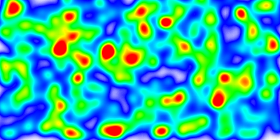

MapServer: Quoi de Neuf pour la 7.0 ?
tbonfort@terriscope.fr
@tbonfort
20 ans d'existence: récapitulatif
- 1994: naissance à l'UMN, financements NASA/FORNET
- 2001: OGC, postgis
- 2007: Naissance OSGEO
- 2009: Premier Code-Sprint (Toronto)
- 2014: v7.0 !
Quelques Chiffres
- ~150k LOC
- ~30 committers
- mailing lists: ~1800 pour -users, ~400 pour -dev
- PSC international
- 14 membres
- USA/Canada: 9
- EU: 5 (FR: 2, IT: 1, AT: 1, HU: 1)
- Un code sprint par an depuis 2009 (Toronto, New-York, Montréal, Seattle, Boston, Vienne)
Releases
- Une version majeure toutes les années
- Versions de maintenance intermédiaires, en fonction du besoin
MapServer 7.0
- Nouveautés Majeures
- UTFGrids
- WFS 2.0
- Heatmaps/Density Maps
- Javascript/V8 StyleItem/Geomtransform
- Autres
- Refactoring du rendu texte
- Suppression du support GD
- Support des encodages multiples
- Suppression des labels BITMAP
- Extensions WCS 2.0
Support UTFGrids
- Spec MapBox permettant de tuiler des données vectorielles
- Interactivité importante
- Support dans OpenLayers
- Pas encore de support tuilé dans MapCache
WFS 2.0
- Download Services INSPIRE
- Présentation demain 14h
HeatMaps
- Filtres permettant de representer sous format raster de la donnée vectorielle
- Parametres d'interpolation/rendu:
- Échelle automatique
- Interpolation dans espaces de couleur RGB/HSL
- Pondération par attribut/expression
- Support en mode tuilé
HeatMaps (1)

interpolation en espace de couleur HSL
HeatMaps (2)

interpolation en espace de couleur RGB
HeatMaps (3)
interpolation en espace de couleur HSL
HeatMaps (4)

Densité pure
HeatMaps (5)
mise a l'échelle fixée
Javascript (V8) StyleItem/GeomTransfom
- Integration de la librairie V8
- Manipulation des geometries/features en fonction d'attributs
- Manipulation des styles et symboles en fonction d'attributs
- "Mode experimental": compatibilité arrière non garantie
Refactoring Rendu Texte
- Implémentations naïves dupliquées pour chaque backend de rendu
- Intégration de la librairie Harfbuzz
- Peu visible pour l'utilisateur final, mais:
- Alignement/centrage de textes exacts
- Possibilité d'utiliser une police de caractères par langue
- Support à terme de tous les scripts supportés par Unicode
Refactoring Rendu Texte (1)

Amélioration de perfs
Refactoring Rendu Texte (2)

Exemple Malayalam
Refactoring Rendu Texte (3)

Exemple Tibéto-Birman
What's coming next
- TMS/GDAL source
- Native
- S3, Riak Caches
- Vector Tiles (UTFGrid)